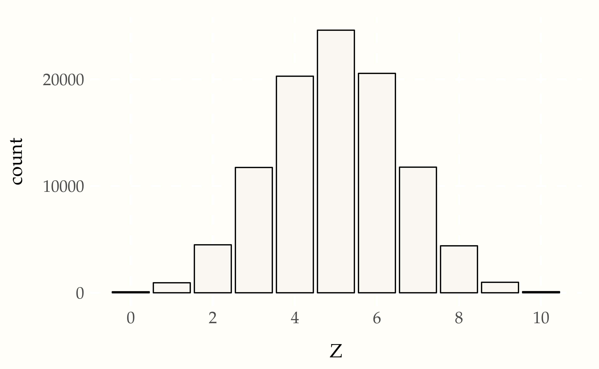
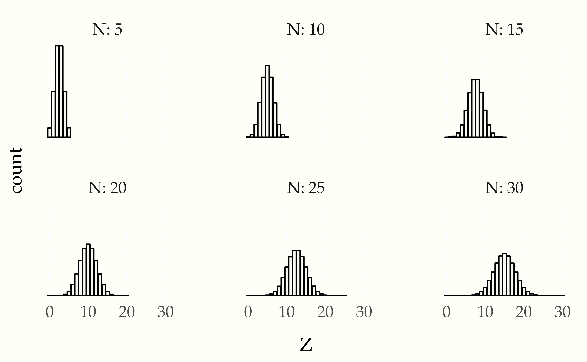
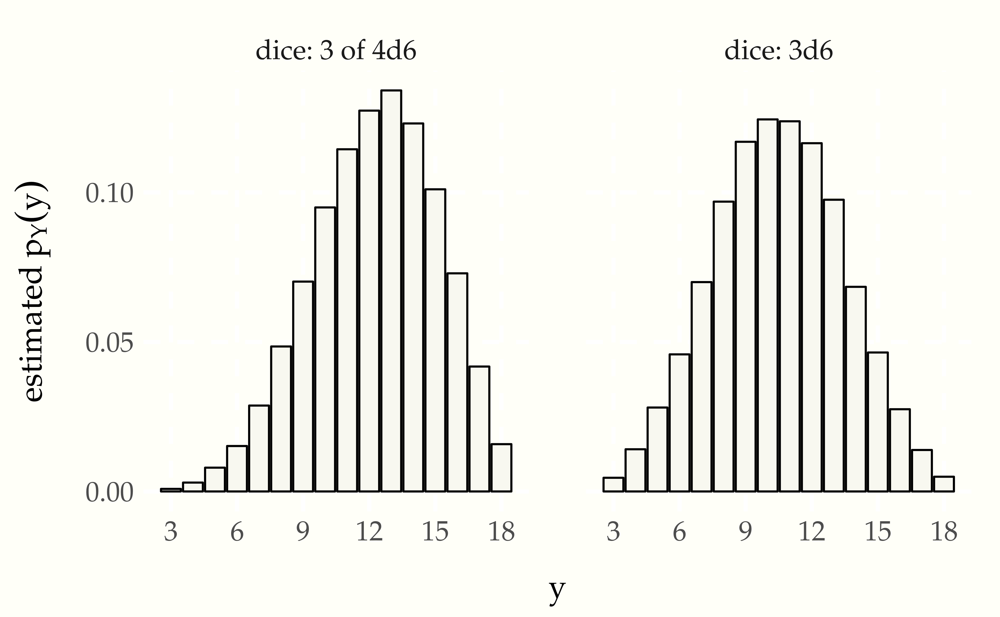
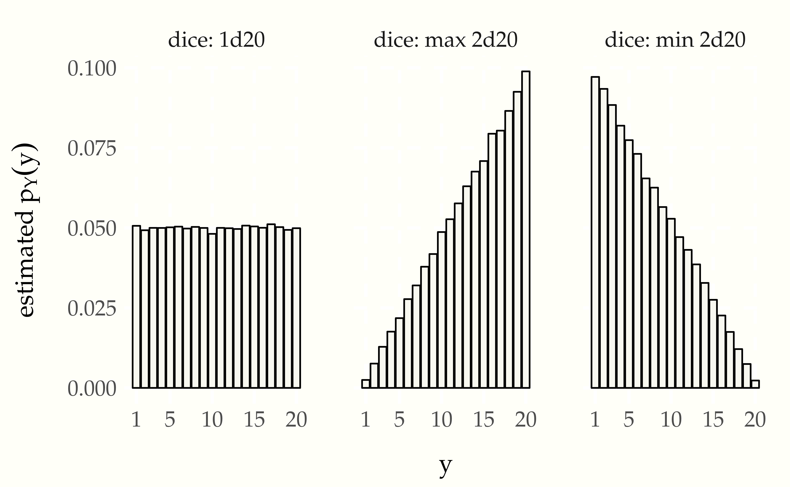
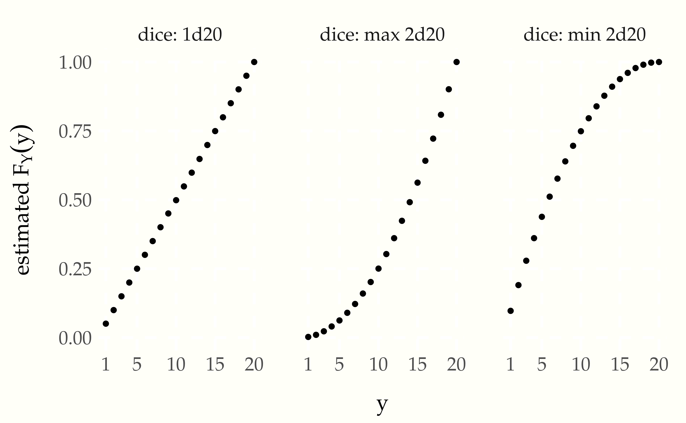
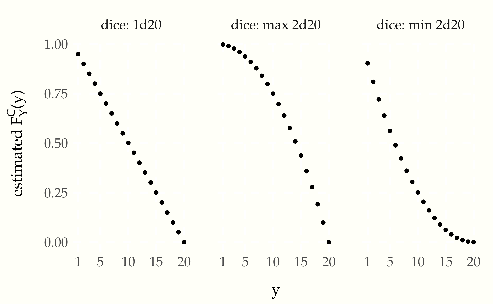
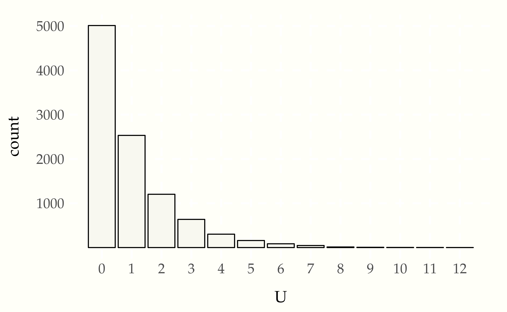
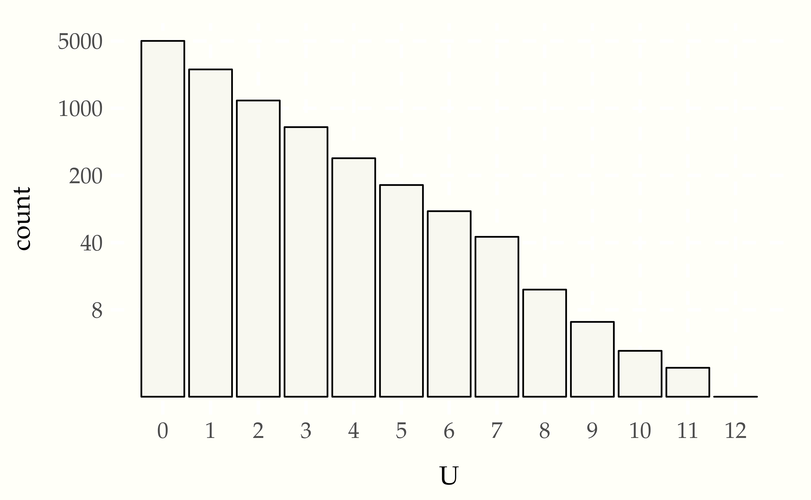

Random variables do not exist in isolation. We started with a single random variable \(Y\) representing the result of a single, specific coin flip. Suppose we fairly flip the coin three times? Then we can have random variables \(Y_1, Y_2, Y_3\) representing the results of each of the flips. We can assume each flip is independent in that it doesn’t depend on the result of other flips. Each of these variables \(Y_n\) for \(n \in 1:3\) has \(\mbox{Pr}[Y_n = 1] = 0.5\) and \(\mbox{Pr}[Y_n = 0] = 0.5\).
We can combine multiple random variables using arithmetic operations. We have already seen comparison operators in writing the event \(Y = 1\). If \(Y_1, \ldots, Y_{10}\) are random variables representing ten coin flips, then we can define their sum as
\[ Z = Y_1 + Y_2 + Y_3 \]
We can simulate values of \(Z\) by simulating values of \(Y_1, Y_2, Y_3\) and adding them.
y1 = uniform_01_rng()
y2 = uniform_01_rng()
y3 = uniform_01_rng()
z = y1 + y2 + y3
print 'z = ' zIt is easier and less error prone to collapse similar values into arrays and operate on the arrays collectively, or with loops if necessary.
for (n in 1:3)
y[n] = uniform_01_rng()
z = sum(y)
print 'z = ' zRunning this program a few times we get
z = 2
z = 3
z = 1
z = 3
z = 1We can use simulation to evaluate the probability of an outcome that
combines multiple random variables. For example, to evaluate
\(\mbox{Pr}[Z = 2]\), we run the simulation many times and count the
proportion of results that are two.27 The sum is calculated using
notation sum(y[m, ]), which is defined to be sum(y[m, ]) = y[m, 1] + ... + y[m, N], where N is the number of entries in row m of the
variable y.
for (m in 1:M)
for (n in 1:3)
y[m, n] = uniform_01_rng()
z[m] = sum(y[m, ])
Pr_is_two = sum(z == 2) / MAs in our other probability estimates, we simulate the variable of
interest \(Z\) a total of \(M\) times, yielding \(z^{(1)}, \ldots, z^{(m)}\). Here, that requires simulating \(y_1^{(m)}, y_2^{(m)}, y_3^{(m)}\) and adding them for each \(z^{(m)}\). We then just count the
number of times Z is simulated to be equal to 2 and divide by the
number of simulations.
Letting \(M = 100\,000\), and running five times, we get
Pr[Z == 2] = 0.375
Pr[Z == 2] = 0.374
Pr[Z == 2] = 0.374
Pr[Z == 2] = 0.373
Pr[Z == 2] = 0.378Nailing down that final digit is going to require one hundred times as many iterations (i.e, \(M = 10\,000\,000\) iterations). Let’s see what that looks like.
Pr[Z == 2] = 0.375
Pr[Z == 2] = 0.375
Pr[Z == 2] = 0.375
Pr[Z == 2] = 0.375
Pr[Z == 2] = 0.375We can do the same for the other numbers, to get a complete picture of taking the probability of each number of heads in separate coin flips.
Pr[Z == 0] = 0.125
Pr[Z == 1] = 0.375
Pr[Z == 2] = 0.375
Pr[Z == 3] = 0.125What if we flip four coins instead of three?
Pr[Z == 0] = 0.062
Pr[Z == 1] = 0.250
Pr[Z == 2] = 0.375
Pr[Z == 3] = 0.250
Pr[Z == 4] = 0.062So far, we have only considered random numbers that take a finite number of integer values. A random variable that only takes values in the integers, i.e., values in
\[ \mathbb{Z} = \ldots -2, -1, 0, 1, 2, \ldots \]
is said to be a discrete random variable.28 In general, any countable set of numerical values could be used as values of a discrete random variable. A set of values is countable if each of its members can be assigned a unique counting number in \(\mathbb{N} = 0, 1, 2, \ldots\). The integers \(\mathbb{Z}\) can be mapped to natural numbers \(\mathbb{N}\) by interleaving, \[\begin{array}{rcl}\mathbb{Z} & & \mathbb{N} \\ \hline 0 & \mapsto & 0 \\ -1 & \mapsto & 1 \\ 1 & \mapsto & 2 \\ -2 & \mapsto &3 \\ 2 & \mapsto & 4 \\ & \vdots & \end{array}\]
It’s going to be convenient to have a function that maps each possible outcome in a variable to its probability. In general, this will be possible if and only if the variable is discrete, as defined in the previous section.
For example, if we reconsider \(Z = Y_1 + \cdots Y_4\), the number of heads in four separate coin flips, we can define a function29 We implicitly assume that functions return zero for arguments not listed.
\[ \begin{array}{rclll} p_Z(0) & = & 1/16 & & \mathrm{TTTT} \\ p_Z(1) & = & 4/16 & & \mathrm{HTTT, THTT, TTHT, TTTH} \\ p_Z(2) & = & 6/16 & & \mathrm{HHTT, HTHT, HTTH, THHT, THTH, TTTH} \\ p_Z(3) & = & 4/16 & & \mathrm{HHHT, HHTH, HTHH, THHH} \\ p_Z(4) & = & 1/16 & & \mathrm{HHHH} \end{array} \]
There are sixteen possible outcomes of flipping four coins. Because the flips are separate and fair, each possible outcome is equally likely. The sequences corresponding to each count of heads (i.e., value of \(Z\)) are recorded in the rightmost columns. The probabilities are derived by dividing the number of ways a value for \(Z\) can arise by the number of possible outcomes.
This function \(p_Z\) was constructed to map a value \(u\) for \(Z\) to the event probability that \(Z = u\),30 Conventionally, this is written as \[p_Z(z) = \mbox{Pr}[Z = z],\] but that can be confusing with upper case \(Z\) denoting a random variable and lower case \(z\) denoting an ordinary variable.
\[ p_Z(u) = \mbox{Pr}[Z = u]. \]
A function defined as above is said to be the probability mass function of the random variable \(Z\). Every discrete random variable has a unique probability mass function.
Probablity mass functions represent probabilities of a discrete set of outcomes. The sum of all such probabilities must be one because at least one of the outcomes must occur.31 More formally, if \(Y\) is a discrete random variable, then \[\sum_u \, p_Y(u) = 1,\] where the summation variable \(u\) ranges over all possible values of \(Y\). We are going to start writing this with the standard overloading of lower and upper case \(Y\) as \[\sum_y \, p_Y(y) = 1.\]
With large numbers of counts based on simulation, we can more readily apprehend what is going on with a plot. Discrete simulations are typically plotted using bar plots, where the outcomes are arrayed on the \(x\) axis with a vertical bar over each one whose height is proportional to the frequency of that outcome.
Figure 2.1: Plot of \(M = 100\,000\) simulations of the probability mass function of a random variable defined as the number of heads in ten specific coin flips.
The actual frequencies are not relevant, only the relative sizes. A simple probability estimate from simulation provides a probability for each outcome proportional to its height.32 And proportional to its area because the bars are of equal width.
This plot can easily be repeated to see what happens as the number of bins grows.
Figure 2.2: Plot of \(M = 1\,000\,000\) simulations of a variable \(Z\) representing the number of heads in \(N\) coin flips. Each plot represents a different \(N\). Because the bars are the same width and the \(x\) axes are scaled to the same range in all plots, the total length of all bars laid end to end is the same in each plot; similarly, the total area of the bars in each plot is the same.
Let \(Y\) be a random variable representing a fair throw of a six-sided die. We can describe this variable easily through it’s probability mass function, which is uniform (i.e., assigns each possible outcome the same probability).
\[ p_Y(y) \ = \ \begin{cases} \frac{1}{6} & \mbox{if} \ y \in 1:6 \\[4pt] 0 & \mbox{otherwise} \end{cases} \]
Games like Monopoly use a pair of six-sided dice and consider the sum of the results. That is, \(Y_1\) and \(Y_2\) are fair six-sided die rolls and \(Z = Y_1 + Y_2\) is the result. Games like Dungeons & Dragons use a trio of six-sided dice and consider the sum of the results. In that scenario, \(Y_1, Y_2, Y_3\) are the results of fair six-sided die rolls and \(Z = Y_1 + Y_2 + Y_3\). Dungeons and Dragons also uses four six-sided die of which the best 3 are summed to produce a result. Let’s simulate some of these approaches and see what the results look like based on \(M = 100\,000\) simulations.33 The simulations are identical to before, only using 1:6 in the range of uniform variables.
Figure 2.3: Estimated \(p_Y(y)\) for case of \(Y\) being the sum of three six-sided dice (3d6) or the sum of the highest three of four six-sided dice (3 of 4d6).
Dungeons and Dragons also uses 20-sided dice.34 In physical games, an icosahedral die is used. The icosahedron is a regular polyhedron with 20 equilateral triangular faces, giving it the largest number of faces among the five Platonic solids. The fifth edition of the game introduced the notion of advantage, where two 20-sided dice are rolled and the higher result retained, as well as disadvantage, which retains the lower result of the two dice. Here’s a simulation using \(M = 100\,000\). The counts are converted to estimated probabilities on the vertical axis in the usual way by dividing by \(M\).
Figure 2.4: Estimated \(p_Y(y)\) for case of \(Y\) being a single twenty-sided die (d20), the higher two twenty-sided die rolls (max 2d20), and the lower of two 20-sided die rolls (min 2d20).
The most likely roll is a 20 when taking the best of two rolls and the most likely roll is 1 when taking the worst of two rolls.35 The chance for a 20 when taking the best of two 20-sided die rolls is \(1 - \left(\frac{19}{20}\right)^2 \approx 0.098\); the chance of rolling 1 is \(\left(\frac{1}{20}\right)^2 = 0.0025\). The probabilities are reversed when taking the worst of two 20-sided die rolls. The min and max plots are mirror images of each other as is to be expected by the consecutive nature of the numbers and the min/max operations.
Some games, such as All Star Baseball, come with spinners rather than dice. The beauty of spinners is that they can be divided into two areas, one with a 27% chance of occurring in a fair spin and one with a 73% chance of occurring.36 27% is roughly the chance of a hit in an at bat. Now suppose we have a random variable \(Y\) representing the result of a fair spin. Its probability mass function is
\[ p_Y(y) \ = \ \begin{cases} 0.27 & \mbox{if} \ \ y = 1 \\ 0.73 & \mbox{if} \ \ y = 0 \end{cases} \]
To simplify our notation, we are going to start defining useful functions that can be used as probability mass functions. Our first example is the so-called Bernoulli37 Named after Jacob Bernoulli (1654–1705), one of several prominent mathematicians in the family. distribution. We define it as a function with somewhat peculiar notation,
\[ \mathrm{Bernoulli}(y \mid \theta) \ = \ \begin{cases} \theta & \mbox{if} \ \ y = 1 \\ 1 - \theta & \mbox{if} \ \ y = 0 \end{cases} \]
The vertical bar (\(\mid\)) separates the variate argument \(y\), which we think of as an outcome, from the parameter argument \(\theta \in [0, 1]\), which determines the probability of the outcome. In this case, the variate \(y\) is discrete, and can take on only the values zero and one, so we write \(y \in 0:1\). The parameter \(\theta\), on the other hand, is continuous and can take on any value between zero and one (inclusive of endpoints), so we write \(y \in [0, 1]\).38 Interval notation \([0, 1]\) is used for the set of values \(x\) such that \(0 \leq x \leq 1\). Parentheses are used for exclusive endpoints, so that \((0, 1)\) is taken to be the set of \(x\) such that \(0 < x < 1\).
This notation allows us to simplify our baseball example. Going back to our example random variable \(Y\) which had a 27% chance of being 1 and a 73% chance of being 0, we can write
\[ p_Y(y) = \mathrm{Bernoulli}(y \mid 0.27). \]
To simplify notation even further, we will say that a random variable \(U\) has a Bernoulli distribution and write
\[ U \sim \mathrm{Bernoulli}(\theta) \]
to indicate that the probability mass function of \(U\) is
\[ p_U(u) = \mathrm{Bernoulli}(u \mid \theta). \]
In Dungeons & Dragons, the players are often concerned with probabilities of rolling higher than a given number (or equivalently, rolling lower than a given number. For example, they may need to roll a 15 to sneak by an orc. Such probabilities are conventionally given in the form of cumulative distribution functions. If \(Y\) is a random variable, its cumulative distribution function \(F_Y\) is defined by
\[ F_Y(y) = \mbox{Pr}[Y \leq y]. \]
The event probability on the right is calculated the same way as always in a simulation, by counting the number of simulated values in which the condition holds and dividing by the number of simulations.
We can plot the cumulative distribution function for the straight twenty-sided die roll and the rolls with advantage (best of two rolls) or disadvantage (worst of two rolls). Here’s the result using the same simulations as in the last plot, with \(M = 100\,000\).
Figure 2.5: Cumulative distribution function for three variables corresponding to rolling a single 20-sided die, or rolling two 20-sided dice and taking the best or worst result.
The plot is rendered as a line plot, though this isn’t quite sensible for discrete distributions—the intermediate values are not real. It’s easy to see that there’s a 50% chance of rolling 5 or lower in a single die throw; with the best of 2 it’s more like a 20% chance and with the worst of 2, it’s more like a 75% chance.
Usually in Dungeons & Dragons, players care about rolling more than a given number, not less, or they’d have to be subtracting all the time. This is where the complementary cumulative distribution function comes in. For a random variable \(Y\), the complementary cumulative distribution function is
\[ F^{\complement}_Y(y) \ = \ 1 - F_Y(y) \ = \ \mbox{Pr}[Y > y]. \]
It’s easier to see with a plot how it relates to the usual cumulative distribution function.
Figure 2.6: Complementary cumulative distributions for a single 20-sided die, the best of two dice, and the worst of two dice.
Consider an experiment in which a coin is tossed until a heads appears Let the random variable \(U\) be the number of tosses that came up tails before the first head comes up. The legal sequences are H (0 tails), TH (1 tails), TTH (2 tails), and so on. There is no upper limit to how many tails may appear before the first heads.
Here’s some code to create \(M\) simulations of the variable \(U\).39 This
code uses a while loop, which repeats as long as its condition
evaluates to true (i.e., 1). Here, the condition compares the output
of the random number generator directly rather than assigning to an
intermediate value. We have also introduced the increment operator
+=, which adds the value of the right hand side to the variable on
the left hand side.
for (m in 1:M)
u[m] = 0
while (uniform_01_rng() == 0)
u[m] += 1This looks dangerous! The body of a while-loop (here u[m] + 1) is
executed iteratively as long as the condition is true.40 If we write
while (1 + 1 == 2) we produce what is known as an infinite loop,
i.e., one that never terminates. Shouldn’t we be worried that the
random number generator will just continue to throw tails (i.e., 0)
so that the program never terminates?41 The answer is “yes,” in general,
because programmers are error prone. In this case, no, because the
odds are vanishingly small that \(U\) gets large. For example,
\[ \begin{array}{rcl} \mbox{Pr}[U < 10] & = & p_U(0) + p_U(1) + \cdots p_U(9) \\[6pt] & = & \frac{1}{2} + \cdots + \frac{1}{1024} \\[6pt] & \approx & 0.999. \end{array} \]
Going further, \(\mbox{Pr}[U < 20] \approx 0.999\,999\), and so on. So there’s not much chance of running very long at all, much less forever.
With the concern of non-termination out of the way, let’s see what we get with \(M = 50\) simulations of \(U\).
1 0 0 0 0 2 0 0 0 1
1 9 0 0 0 4 1 2 0 0
0 1 1 0 2 2 0 1 1 1
0 4 1 1 1 1 1 3 0 2
1 3 1 3 3 1 8 1 2 0It’s very hard to discern a pattern here. There are a lot of zero values, but also some large values. For cases like these, we can use a bar plot to plot the values. This time, we’re going to use \(M = 10\,000\) to get a better picture of the pattern.
Figure 2.7: Frequency of outcomes in \(10\,000\) simulation draws of \(U\), the number of tails seen before a head in a coin-tossing experiment.
The \(x\)-axis represents the value of \(U\) and the \(y\)-axis the number of times that value arose in the simulation.42 Despite \(U\) having infinitely many possible values, it will only take on finitely many of them in a finite sample. Each additional throw of tails appears to cut the probability of occurrence in half result seems to have about half the probability of the previous one. This is what we should expect because each coin toss brings a 50% probability of a tails result. This exponential decay43 Exponential decay means each additional outcome is only a fraction as likely as the previous one. in the counts with the number of tails thrown is more obvious when plotted on the log scale.
Figure 2.8: Frequency of outcomes in \(10\,000\) simulation draws of \(U\), the number of tails seen before a head in a coin-tossing experiment, this time with the outcome count on the log scale to illustrate the exponentially decreasing probabilities of each successive number of tails.
There is a 50% probability that the first toss is heads, yielding a sequence of zero tails, and \(U = 0\). Each successive number of tails is half as likely as the previous, because another tail will have to be thrown, which has a 50% probability.44 In symbols, \[ \mbox{Pr}[U = n + 1] \ = \ \frac{1}{2} \mbox{Pr}[U = n]. \]
Thus the overall probability mass function for \(U\) is45 An elementary result of calculus is that \[\sum_{n = 0}^{\infty} \frac{1}{2^{n + 1}} \ = \ \frac{1}{2} + \frac{1}{4} + \frac{1}{8} + \frac{1}{16} + \cdots \ = \ 1.\]
\[ \begin{array}{rclcl} p_U(0) & = & \frac{1}{2} & = & \frac{1}{2} \\ p_U(1) & = & \frac{1}{2} \times \frac{1}{2} & = & \frac{1}{4} \\ p_U(2) & = & \frac{1}{2} \times \frac{1}{2} \times \frac{1}{2} & = & \frac{1}{8} \\ & \vdots & \\ p_U(u) & = & \underbrace{\frac{1}{2} \times \cdots \times \frac{1}{2}}_{u + 1 \ \mathrm{times}} & = & \left( \frac{1}{2} \right)^{u + 1} \\ & \vdots & \end{array} \]
Even though there are infinitely many possible realizations of the random variable \(U\), simulation may still be used to compute event probabilities, such as \(\mbox{Pr}[U \leq 3]\), by
for (m in 1:M)
u[m] = sim_u()
leq3[m] = (u[m] <= 3)
print 'est Pr[U <= 3] = ', sum(leq3) / MLet’s see what we get with $M = \(100\,000\),
est Pr[U <= 3] = 0.937Writing out the analytic answer involves an infinte sum,
\[ \mbox{Pr}[U \leq 3] \ = \ \sum_{u = 0}^{\infty} p_U(u) \mathrm{I}[u \leq 3]. \]
We can recognize that all of the terms where \(u > 3\) are zero, so that this reduces to
\[ \begin{array}{rcl} \mbox{Pr}[U \leq 3] & = & p_U(0) + p_U(1) + p_U(2) + p_U(3) \\[8pt] & = & \frac{1}{2} + \frac{1}{4} + \frac{1}{8} + \frac{1}{16} \\[8pt] & \approx & 0.938. \end{array} \]
Simulation is not that clever. It just blindly simulates values of \(u\), many of which turn out to be larger than three. In the sequence of simulated values, many were larger than three—the histogram summarized a much larger simulation, none of the values of which were that large.
Given that we only ever run a finite number of iterations and thus only ever see a finite number of values, how does simulation get the right answer?46 Spoiler alert! The technical answer, like so much in statistics, is that the central limit theorem kicks in. Isn’t there some kind of bias from only visiting smallish values? The answer is “no” precisely because the values that are not simulated are so rare. Their total probability mass, when added together is small, so they cannot have much influence on the simulated answer. For simulations to get the right answer,47 Given some qualifications! they need only visit the typical values seen in simulation, not the extreme values.48 The sparsity problem grows exponentially worse in higher dimensions and uncountably worse with continuous random variables.
Antoine Gombaud, the Chevalier de Méré,49 Self appointed! challenged Blaise Pascal to explain how it was possible that thre probability of throwing at least one six in four throws of a single six-sided die is slightly greater than \(\frac{1}{2}\), whereas the probability of throwing two sixes in 24 throws of a pair of six-sided die was slightly less than \(\frac{1}{2}\).50 Smith, D. A., 1929. A Source Book on Mathematics. McGraw-Hill, New York; cited in Bulmer, 1967, p. 26. We can evaluate these claims by simulation directly.51 Working out the example analytically, there is a \(\frac{35}{36}\) chance of not throwing double six with two six-sided dice, and so \(\left( \frac{35}{36} \right)^{24}\) is the probability of not throwing at least one double six in 24 throws, and so \[1 - \left( \frac{35}{36} \right)^{24} \approx 0.491\] is the probability of throwing at least one double-six in 24 fair throws of a pair of six-sided dice.
To represent the problem in probabilistic notation, we introduce a random variable \(Y_{1, k} \in 1:6\) and \(Y_{2, k} \in 1:6\) for each of the two dice in each of the \(k \in 1:24\) throws. Define the outcome of the game as the random variable
\[ Z \ = \ \begin{cases} 1 \ \ \mbox{if there is a} \ k \ \mbox{such that} \ Y_{1,k} = Y_{2,k} = 6, \ \mbox{and} \\[4pt] 0 \ \ \mbox{otherwise} \end{cases} \]
That is, \(Z = 1\) if there is at least one double-six in the 24 throws. The Chevalier de Méré was inquiring about the the value of the event probability \(\mbox{Pr}[Z = 1]\), i.e., the chance of winning by throwing at least one double six in 24 fair throws of a pair of dice.
We will introduce variables for the full range of simulated random
variable values and simulation indexes in the following program.52 The
simulation indexes use parentheses rather than the traditional
brackets and come first so that, e.g., the simulated value y(m) will
consist of a \(2 \times 24\) collection of values, matching the size of
\(Y\).
for (m in 1:M)
for (k in 1:24)
y(m)[1, k] = uniform_rng(1:6)
y(m)[2, k] = uniform_rng(1:6)
z(m)[k] = y(m)[1, k] + y(m)[2, k]
success(m) = (sum(z(m) == 12) > 0)
print 'Pr[double-six in 24 throws] = ' sum(success) / MLet’s run that for \(M = 100\,000\) simulations a few times and see what the estimated event probabilities look like.
Pr[double-six in 24 throws] = 0.493
Pr[double-six in 24 throws] = 0.492
Pr[double-six in 24 throws] = 0.495
Pr[double-six in 24 throws] = 0.493
Pr[double-six in 24 throws] = 0.489This shows the result to be around 0.49. The Chevalier de Méré should not bet that he’ll roll at least one pair of sixes in 24 throws! To nail down the last digit, we could use \(10\,000\,000\) simulations rather than \(100\,000\). As shown in the previous note, calculating the result analytically yields 0.491 to three decimal places, which is in agreement with the simulation-based estimates.
The Chevalier de Méré was reputedly perplexed by the difference between the chance of at least one double-six in 24 throws of two dice versus the chance of at least one six in 4 throws of a single die.53 The probability of at least one six in four die rolls works out to \[1 - \left( \frac{5}{6} \right)^4 \approx 0.518.\] As noted above, the probability of at least one double six in 24 die rolls is \(\approx 0.491.\)
Drawing from a deck of cards is typically done without replacement. Once a card is drawn, it may not be drawn again. A traditional deck of playing cards consists of 52 cards, each marked with a value
\[ 2, 3, \ldots, 10, \mathrm{J}, \mathrm{Q}, \mathrm{K}, \mathrm{A} \]
and a suit from
\[ \clubsuit, \, \diamondsuit, \ \heartsuit, \ \spadesuit \]
The lettered values are called jack, queen, king, and ace, and the suits are called clubs, diamonds, hearts, and spades. Traditionally the diamonds and hearts are colored red and the clubs and spades colored black (here they are indicated by unfilled vs. filled shading).
A hand of cards consists of some number of cards drawn from a deck. When cards are drawn from a deck, they are not replaced. This is called sampling without replacement. Thus a hand of cards can contain at most 52 cards, because after 52 cards are drawn, there are none left.54 In some games, multiple decks are often used. Drawing without replacement also affects probabilities of particular hands.
For example, drawing two cards from a fresh deck, the chance of getting two aces is not \(\left(\frac{4}{52}\right)^2\), but rather \(\left(\frac{4}{52} \times \frac{3}{51}\right) \approx 0.0045.\) The chance of drawing an ace on the first draw is \(\frac{4}{52}\) because there are 4 aces among the 52 cards and each card is assumed to be equally likely to be drawn from any deck. But after the first ace is drawn, there are only 51 cards remaining, and among those, only 3 aces. So the chance of the second card being an ace is only \(\frac{3}{51}\).
We can verify that with a quick simulation.
total = 0
for (m in 1:M)
y <- draw_cards(2)
if (is_ace(y[1]) && is_ace(y[2]))
total += 1
print 'Pr[draw 2 aces] = ' total / MLet’s run that with \(M = 10\,000\), a few
Pr[draw 2 aces] = 0.0053
Pr[draw 2 aces] = 0.0055
Pr[draw 2 aces] = 0.0048
Pr[draw 2 aces] = 0.0043
Pr[draw 2 aces] = 0.0042
Pr[draw 2 aces] = 0.0045
Pr[draw 2 aces] = 0.0049
Pr[draw 2 aces] = 0.0034Curiously, we are now not getting a single digit of accuracy, even with \(10\,000\) draws. What happened?
A fundamental problem with accuracy of simulation-based estimates is that rare events are hard to estimate with random draws. If the event of drawing two aces only has a 0.45% chance (roughly 1 in 200) of occurring, we need a lot of simulation events to see it often enough to get a good estimate of even that first digit. With \(10\,000\) draws, the number of two-ace draws we expect to see is about 50 if they occur at roughly a 1 in 200 hands rate. We know from prior experience that estimating a number with only 50 draws is not going to be very accurate. So what we need to do is increase the number of draws. Let’s run that again with \(M = 1\,000\,000\) draws.
Pr[draw 2 aces] = 0.0045
Pr[draw 2 aces] = 0.0046
Pr[draw 2 aces] = 0.0046
Pr[draw 2 aces] = 0.0045Now with an expected \(5\,000\) occurrences of a two-ace hand, we have a much better handle on the relative accuracy, having nailed down at least the first digit and gotten close with the second digit.
Suppose we have an estimate \(\hat{y}\) for a quantity \(y\). One natural way to measure the accuracy of the estimate is to consider its error,
\[ \mathrm{err} = \hat{y} - y. \]
If the estimate is too high, the error will be positive, and if the estimate is too low, the error will be negative. The problem with this standard notion of error arises when the estimand \(y\) is very small or very large.
Now consider an estimand of \(y = 0.01\) and an estimate of \(\hat{y} = 0.015\). The error is just \(y - \hat{y}\) = 0.005$, which looks small. But compared to the magnitude of \(y\), which is only 0.01, the error is relatively large.
The relative error of an estimate \(\hat{y}\) of a quantity \(y\) can be defined relative to the scale of the estimand as
\[ \mathrm{rel\_err} = \frac{\hat{y} - y}{\left| \, y \, \right|}. \]
This delivers results that are scaled in units of of \(y\). The relative error for our estimate \(\hat{y} = 0.015\) for an estimand \(y = 0.01\) has relative error of
\[ \frac{0.015 - 0.01}{\left| 0.01 \right|} = 0.5. \]
That’s a 50% relative error, which now looks quite large compared to the 0.005 error.55 An estimate of \(\hat{y} = 0.015\) has an error of \(-0.005\) and a relative error of \(-0.5\), or 50% too low.
If the sign of error doesn’t matter, errors are often reported as absolute values, i.e., as absolute error and absolute relative error.
The central limit theorem provides guarantees only about the error; to calculate its implications for relative error, the true value of the estimand must be known.
If an event has a probability of \(\theta\), the odds of it happening are given by the function
\[ \mathrm{odds}(\theta) = \frac{\theta}{1 - \theta}. \]
For example, if there is a 25% chance of an event happening, the odds of it happening are \(\frac{0.25}{1 - 0.25} = \frac{1}{3}\). In other words, it’s three times as probable that the event does not occur than that it occurs. Odds are written as \(1:3\) and pronounced “one to three” rather than being written as \(\frac{1}{3}\) and pronounced “one in three”.56 When reporting odds, it is common to report the odds as “three to one against” for an event with a 25% probability.
The Earl of Yarborough57 Many early developments in probability were bankrolled by gambling aristocrats. reputedly laid a thousand to one odds against drawing a 13-card whist hand that contained no card higher than a 9.58 Bulmer, 1967, p. 26. There is a total of 32 cards that are 9 or lower (and hence 20 cards 10 or higher). We can use the same argument to calculate the Earl’s odds of drawing his eponymous hand at
\[ \begin{array}{rcl} \mbox{Pr}\left[\mbox{draw a Yarborough}\right] & = & \frac{32}{52} \times \frac{31}{51} \times \cdots \times \frac{20}{40} \\[6pt] & = & \prod_{n = 0}^{12} \frac{32 - n}{52 - n} \\[6pt] & \approx & 0.00055 \end{array} \]
The \(n\) in the second line represents the number of cards drawn previously. The true odds are roughly one in 2000, or rounded to the nearest integer
\[ 1:1817 \approx \frac{0.00055}{1 - 0.00055} \]
Rounded to the nearest integer, the odds are 1817:1 against, so the Earl should expect to profit from his bet.59 Modulo the fact that one rare event might ruin him—these market-making schemes require a large bankroll and many repetitions to avoid ruin.
Suppose we have a sequence of random variables, \(V_1, \ldots, V_N\), each with a Bernoulli distribution \(V_n \sim \mathrm{Bernoulli}(\theta)\). That is, each \(V_n\) takes on the value 1 with a probabilty of \(\theta\).
We can think of \(V_1, \ldots, V_N\) as \(N\) repeated binary trials, each with a \(\theta\) chance of success.60 The term “success” is the conventional name for the result 1 in an abstract binary trial, with result 0 being “failure”. That is, each \(V_n\) is a completely independent trial and each trial has a \(\theta\) chance of success. By independent, we mean that the success of \(Y_n\) does not depend on \(Y_{n'}\) if \(n \neq n'\).
What can we say about the number of successes in \(N\) trials? Let
\[ \begin{array}{rcl} Y & = & V_1 + \cdots + V_N \\[3pt] & = & \sum_{n = 1}^N V_n, \end{array} \]
and the question reduces to what we can say about the random variable \(Y\). Repeated binary trials come up so often that the distribution of \(Y\) has a name, the binomial distribution. Pascal figured out that for any number of trials \(N \geq 0\), chance of success \(\theta \in [0, 1]\), the probability of a total number of successes \(y \in 0:N\) is
\[ p_Y(y) = \mathrm{Binomial}(y \mid N, \theta), \]
where61 The value \({N \choose y}\) is called the binomial coefficient due to its use here, and defined by \[{N \choose y} = \frac{N!}{(N - y)! \times y!}.\] The value of the factorial \(m!\) for \(m > 0\) is \[m! = m \times (m - 1) \times (m - 2) \times \cdots 1.\] The recursive definition has base case \(0! = 1\) and inductive case \((n + 1)! = n \times n!.\) The postfix factorial operator binds more tightly than multiplication, so this resolves as \(n \times (n!)\).
\[ \mathrm{Binomial}(y \mid N, \theta) \ = \ {N \choose y} \times \theta^y \times (1 - \theta)^{N - y}. \]
If \(Y \sim \mathrm{Bernoulli}(\theta)\), then
\[ \begin{array}{rcl} \mathbb{E}[Y] & = & \sum_{y \in 0:1} p_Y(y) \times y & = & \\[2pt] & = & \mathrm{Bernoulli}(0 \mid \theta) \times 0 + \mathrm{Bernoulli}(1 \mid \theta) \times 1 \\[2pt] & = & (1 - \theta) \times 0 + \theta \times 1 \\[2pt] & = & \theta. \end{array} \]
Plugging this into the formula for variance yields
\[ \begin{array}{rcl} \mathrm{var}[Y] & = & \mathbb{E}\left[ (Y - \mathbb{E}[Y])^2 \right] \\[2pt] & = & \sum_{y \in 0:1} p_Y(y) \times (y - \theta)^2 \\[2pt] & = & (1 - \theta) \times (0 - \theta)^2 + \theta \times (1 - \theta)^2 \\[2pt] & = & (1 - \theta) \times \theta^2 + \theta \times (1 - 2 \times \theta + \theta^2) \\[2pt] & = & \theta^2 - \theta^3 + \theta - 2 \times \theta^2 + \theta^3 \\[2pt] & = & \theta - \theta^2 \\[2pt] & = & \theta \times (1 - \theta). \end{array} \]
The binomial distribution is for repeated binary trials—the multinomial distribution extends the same idea to repeated categorical trials. Just as a multiple coin tosses can be represented by a binomial distribution, multiple die rolls can be represented by multinomial distributions.
Consider two binomial random variables,
\[ Y \sim \mathrm{binomial}(N, \theta), \]
and
\[ Z \sim \mathrm{binomial}(2 \times N, \frac{1}{2} \theta). \]
The variable \(Z\) has a maximum value that is twice as large of that of \(Y\), yet it has the same expectation,
\[ \mathbb{E}[Y] = \mathbb{E}[Z] = N \times \theta. \]
Poisson is the limit of the binomial in the sense that
\[ \mathrm{Poisson}(y \mid \lambda) \ = \ \lim_{N \rightarrow \infty} \mathrm{Binomial}(y \mid N, \frac{1}{N} \lambda) \]
We can plot this out in a series of binomials: binomial(N, lambda / N) for N in ceil(lambda), *= sqrt(10) …